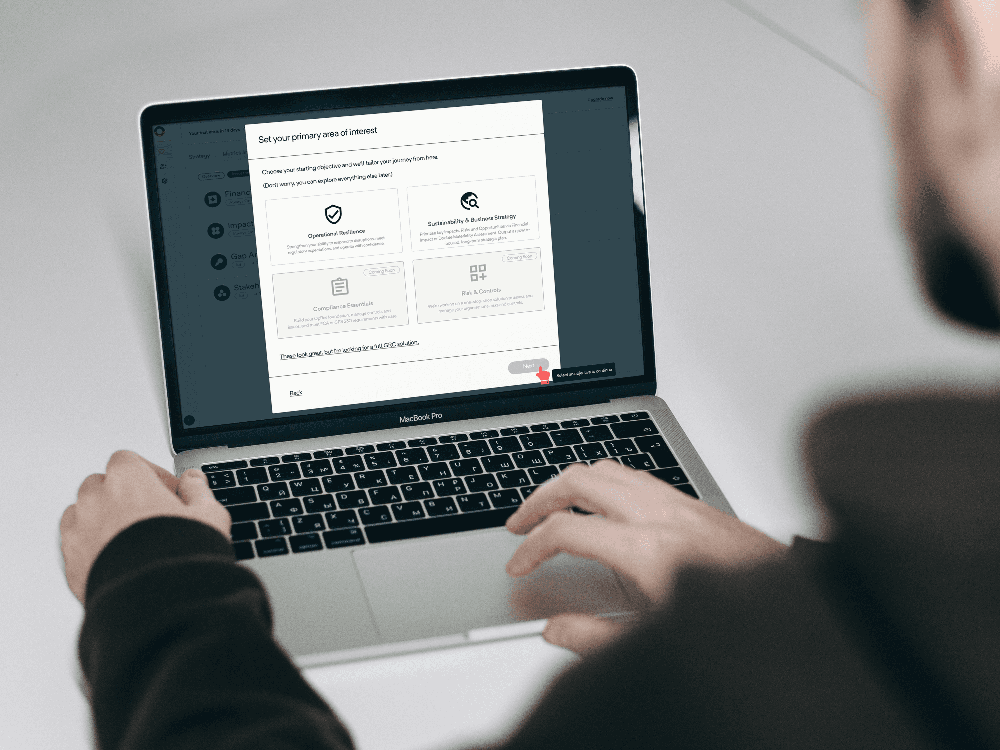

Overview
I worked with Drova during a pivotal stage of their growth. The company was transitioning from a sales-led model to a product-led growth (PLG) strategy, and my focus was on redesigning the signup channel. The main objective was to capture the right information from customers as quickly as possible and, using AI-driven profiling, get them into the product fast with a free trial.
This required me to quickly understand existing workflows, align with business objectives, and design an experience that balanced ease for SME leaders with the company's need for actionable data. The result was a frictionless signup flow that reduced barriers, supported Drova's PLG goals, and opened a clearer path for customers to explore and convert.
My role / responsibilities
As the Product Designer, I was responsible for shaping the end-to-end user journey from potential customer to engaged trial user. I collaborated closely with product managers, engineers, and the marketing team to ensure the signup experience balanced business objectives with user needs.
My focus areas included:
- Early research and discovery to understand SME leaders' expectations and pain points.
- Translating insights into a frictionless user experience that reduced barriers to signup.
- Designing a clean, intuitive UI that reflected Drova's brand and growth ambitions.
- Aligning with cross-functional teams to make sure the solution was feasible, impactful, and scalable.
Through this role, I helped deliver a signup flow that supported Drova's product-led growth strategy while providing a smoother, more engaging path for customers.

Problem
At the time, Drova's website relied on "Contact Us" forms instead of free trials. SME leaders had to go through sales before ever seeing the product, which slowed adoption and created friction.
The bigger challenge, however, was defining the real problem to solve first. There were broad conversations about whether we needed a full website redesign or smaller fixes to the existing site. Each team had its own priorities, and without alignment we risked running in circles. We needed to decide what would create the most impact in the shortest time and focus on that as the first step toward product-led growth.
The path to Drova was too slow and too heavy. Every extra step risked losing the customer before they ever saw the product.
Exploration & Scope
Early on, it was difficult to define the main problem. Some of us pushed for a full website redesign, while others focused on fixing the signup flow. I created v0 website prototypes and mapped out interaction diagrams and user flows to test different directions and bring clarity to the discussion.
Some of my early prototyping work done in v0 during early exploration of the problem
Through this process, we realised that a new site would take months and would not immediately solve the most urgent issue: customers still had to click "Contact Us" and wait for sales before ever touching the product.
By reframing the scope around the online signup challenge, we were able to align PMs, engineers, and marketing on a clear priority. This shift meant the team stopped running in circles and could deliver faster. The decision was made to leave the website redesign for later in the year, and instead focus on implementing the self-serve signup flow that would push Drova towards product-led growth
We mapped the signup flow into a detailed diagram, categorised into user interactions, screens, and system requests; a crucial step that helped engineers understand system behavior and gave PMs and designers a shared view to collaborate effectively.
Based on the interaction diagram, we translated the identified steps into low-fidelity wireframes, outlining the key screens and flows before moving into detailed design
We then moved into higher-fidelity concepts, experimenting with imagery, layout, and style. Early explorations included product shots, but we ultimately steered towards landscape imagery as it better aligned with Drova's brand vision, mission, and values
While exploring higher-fidelity designs, we realised the flow had become overly complex! introducing too many steps before users reached the product. We then streamlined the journey by cutting unnecessary screens to keep signup fast and frictionless
Solution
Once the scope was clear, we focused on delivering the first version of Drova's online signup channel. The goal was to give SME leaders a faster, self-serve way into the product while still capturing the data the business needed.
Key improvements included:
- Streamlined flow that reduced friction and made signups faster.
- Smarter data capture, collecting only the most critical details up front to decrease friction.
- AI-driven profiling to personalize onboarding and optimize the experience based on user type.
- Free trial access, letting customers experience product value before committing.
The result was a frictionless, data-informed signup experience that balanced user needs with business goals and helped Drova take its first real step toward product-led growth.
We reduced the signup flow to under 0 seconds, achieving our goal of a frictionless path into the product.
The flow adapts based on who the customer is. Using AI profiling, we adjusted copy, prefilling as much information as possible to create a smoother, faster signup experience.
I designed not just the signup flow, but also the supporting touchpoints; From welcome emails into the product to invitations for new team members. Each interaction was crafted to reduce friction and consistently represent Drova's brand across the journey.
I also designed edge case screens to handle unexpected scenarios, making the signup flow more resilient and reducing friction for customers.
The scope of this project was wide at first, with every team wanting something different from the signup flow. By working closely with PMs and engineers, I helped shrink it down into a realistic first release. We carved out an MVP that balanced business needs with a frictionless experience for SME leaders, and delivered the first version of Drova's online signup channel.
The flow is now live, giving customers a smoother path to trial the product and supporting Drova's shift to product-led growth. If I had stayed on, my next focus would have been measuring completion rates, trial-to-paid conversions, and refining onboarding to build on the momentum of this release.
Alongside the signup flow, I improved Drova's design system. The type scale was scattered and inconsistent, making it hard to use. I restructured it with clear hierarchy, size ratios, and usage guidelines; creating a system that was easier to apply and better aligned with UI principles.
I also produced product illustrations that supported user understanding and represented the brand consistently. These foundations gave the team clearer rules to design with and made the product feel more cohesive.